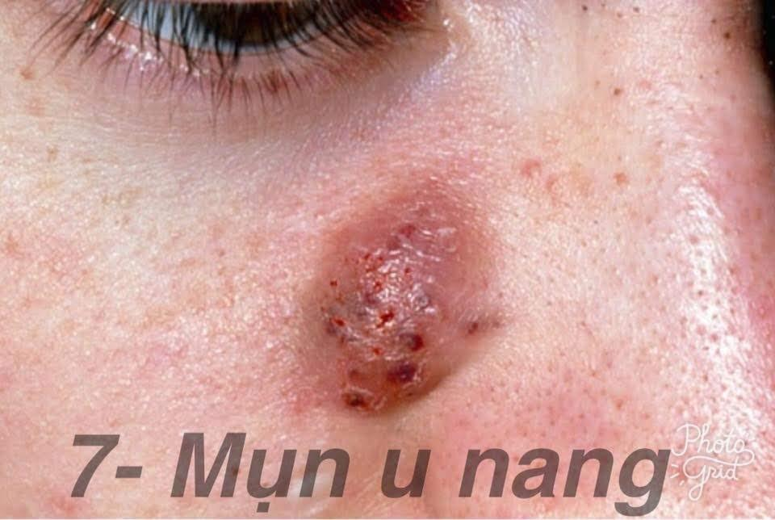
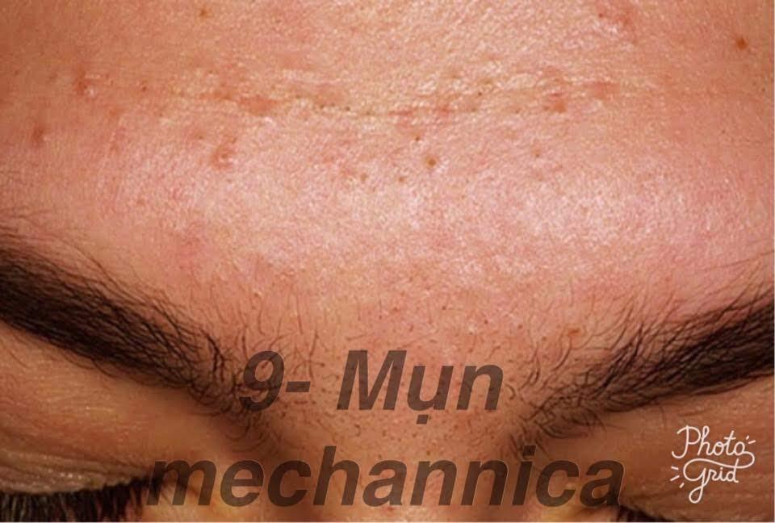
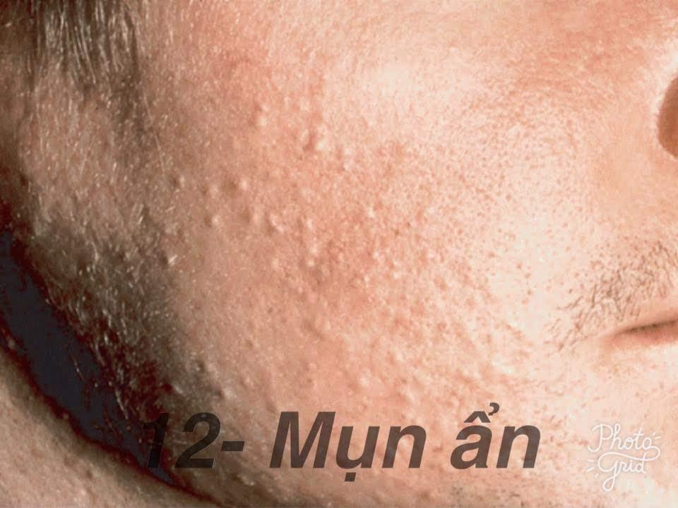

ĐIỂM DANH 12 LOẠI MỤN THƯỜNG GẶP - Phần 2
Mụn u nang (CYSTS)
Đây là dạng mụn nghiêm trọng nhất, bước tiến cuối cùng của các thể loại mụn. Mụn u nang rất lớn, hình thành theo từng ổ, chứa đầy đầy mủ sâu bên trong da nên khá mềm và nhìn giống những bóng nước. Cũng giống như mụn u, mụn u nang rất đau nếu chẳng may chạm phải. Nguy cơ để lại sẹo, thậm chí là sẹo rỗ rất cao.
Những bạn bị mụn u nang nhất định phải đến khám da liễu chứ không nên tự chữa.
Mụn trứng cá cụm (Conglobata)
Mụn Conglobata là loại mụn nặng nhất, bao gồm nhiều nốt viêm được kết nối dưới da với nhau tạo thành từng cụm. Ngoài mặt ra thì nó có thể hình thành ở cổ, ngực, cánh tay và mông và thường để lại sẹo.
Đây là loại mụn trứng cá là phổ biến hơn ở nam giới và đôi khi hình thành do sử dụng Steroid hoặc Testosterone.
Đối với loại mụn này thì chắc chắn các bạn phải được điểu trị bởi bác sĩ da liễu nhé.
Mụn mechannica (mụn thể thao)
Đây là một dạng mụn gây ra bởi sự kết hợp của, thường là kết quả của việc đội mũ bảo hiểm hoặc các dạng mũ khi chơi thể thao. Mụn này hình thành nhiều ở trên trán gần chân tóc, quanh quai hàm, cằm và thậm chí ở lưng. Vì loại mụn này thường thấy ở các vận động viên – những người thường đổ mồ hôi nhiều dưới các lớp mũ bảo hộ nên nó còn được gọi là mụn thể thao.
Một thủ phạm khác gây ra mụn Mechanica là khi bạn mặc quần áo quá chật, khi đeo dây ba lô hoặc khi đeo băng đầu quá lâu.
Mụn phát ban, mụn dị ứng
Những loại mụn này dễ nhận diện lắm
Nó chỉ mẩn đỏ lên thôi chứ không có nhân, không đau không sưng gì hết, đôi khi có nước bên trong.
Mụn nội tiết
Chúng ta có thể nhận dạng mụn nội tiết qua vị trí mụn và chu kì mụn quay lại. Thường mụn nội tiết sẽ mọc đầu tiên ở quanh miệng, cằm và quai hàm, sau đó sẽ đến giữa trán và lan ra các vị trí khác.
Là tổng hợp của tất cả các loại mụn bên trên, chứ nó không phải chính xác 1 loại mụn nào cả.
Mụn ẩn
Đúng như tên gọi của nó, mụn này ẩn sâu dưới da, không thấy đầu mụn, bạn chỉ biết đến sự xuất hiện của nó khi căng da lên hoặc dùng máy móc để soi da. Mụn này thường ở dưới da lâu hơn các loại mụn khác, chân khá sâu nên tuyệt đối không tự nặn vì nếu không nặn hết chân sẽ khiến tình trạng mụn càng thêm tồi tệ, có thể sẽ làm nó phát triển thành mụn mủ, mụn u.
Mụn ẩn càng ở dưới da lâu bao nhiêu thì sẹo rỗ càng dễ hình thành bấy nhiêu.